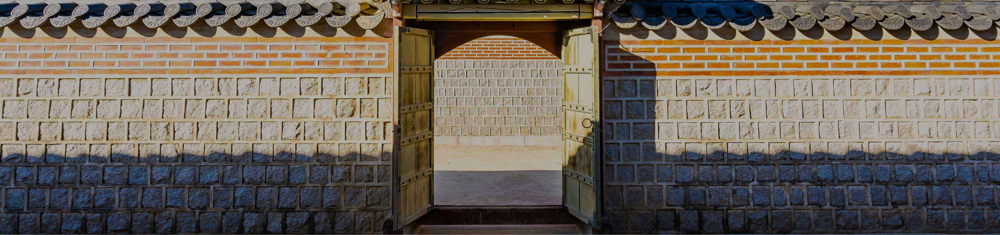

미리보는 경복궁
Gyeongbokgung Palace in advance
Gyeongbokgung Palace in advance
the Imperial Palace & gate
조선 오백 년의 역사가 살아 숨쉬는 곳
경복궁의 역사를. 둘러보는 시간
경복궁의 궁성은 1398년(태조7)에 동쪽, 남쪽, 서쪽이 조성되었으며, 이때 궁성문인 건춘, 광화, 영추문도 세워졌다.
이 보다 뒤에 북쪽 담장이 완성되고 북문인 신무문도 갖추어졌다. 궁성은 거의 네모난 형태를 이루고 있고 전면 좌우
끝에는 각루(角樓)인 동십자각과 서십자각이 있다.
경복궁의 궁성은 임진왜란으로 궁궐 건물이 모두 소실되었을 때에도 일반 백성들로부터 궁궐터를 보호하는 역할을 하였다.
고종 년간 경복궁 중건 시 궁성이 새 단장을 하게 되었지만 일제강점기에 앞부분이 헐려 나가고 또 한국전쟁 때 파손되었다.
현재의 궁성은 그 이후 여러 차례 고쳐 쌓은 것이고, 일부는 본래 위치보다 안으로 들여 쌓은 상태이다.
the gates of Gyeongbokgung Palace
조선 오백 년의 역사가 살아 숨쉬는 곳
경복궁의 역사를. 둘러보는 시간
광화문은 경복궁의 정문이다. 광화문은 조선의 법궁에 해당하는 궁궐의 정문으로서 다른 궁궐들의 정문과는 달리 돌로 높은 석축을 쌓고 그 위에 중층구조의 누각을 세워서 마치 성곽의 성문과 같은 격식으로 장대하게 지어졌다.
광화문은 중층으로 된 문루를 받치는 기단석축이 세 개의 홍예문으로 이루어져 있는데, 중앙의 홍예문으로는 왕이, 좌우의 홍예문으로는 왕세자와 신하들이 출입하였다. 또한 문루(門樓)에는 종을 걸어 두어 시각을 알리는데 사용하였다.
건춘문은 궁성의 동쪽 문으로 만물의 기운이 움트는 ‘봄이 시작 된다’라는 뜻을 가지고 있다. 건춘문은 주로 세자와 동궁 영역에 위치한 각사에서 일하는 신하들이 출입하던 문이다. 현재의 문은 고종 2년(1865) 경복궁 중건 당시 건립된 것이다.
경복궁의 서쪽문인 영추문은 ‘가을을 맞이한다’라는 뜻을 가지고 있다. 건춘문과 대비되는 개념의 이름으로 서쪽 방위의 개념에 맞게 지어졌다. 이 문은 주로 문무백관이 출입하던 곳으로 특히 서쪽 궐내각사에 근무하던 신하들이 많이 이용하였다. 현재의 문은 1975년에 철근콘크리트 구조로 복원된 것이다.
신무문은 궁성의 북쪽 문으로 북쪽 궁성이 마련되고 나서 세워진 것이다. 신무문 쪽은 인적이 드물었으나 신하들의 공훈을 기록해 놓은 회맹단이 있어 왕이 공신들의 충성을 다짐하는 모임이 있는 회맹제에 참석할 때에는 이 문을 이용하였다. 또 영조 때에는 숙빈 최씨를 모신 육상궁에 참배하기 위하여 경복궁터를 길로 삼았는데, 이때 신무문을 자주 이용하였다.
동십자각은 궁성의 동남쪽 모서리에 서있는 각루(角樓)이다. 궁성 담장이 헐리면서 현재와 같이 길 한가운데 서있게 되었다. 동십자각은 서십자각과 함께 궁성 전면 양 모서리에 궁궐 안팎을 감시할 수 있도록 세운 것인데, 서십자각은 일제강점기에 헐려버렸다.